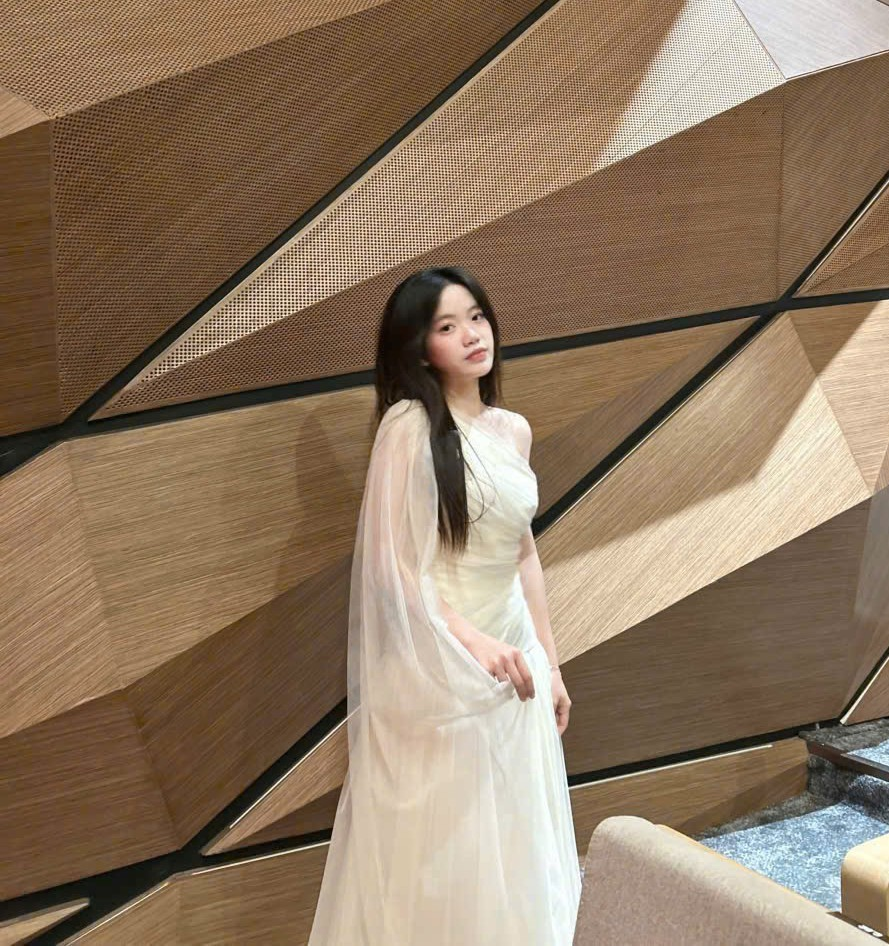

Hoàng Phi Nhung
Sinh viên K25 - Khoa Sư phạm Âm nhạc
Đại học Sư phạm Nghệ thuật TW
- Chuyên ngành: Sư phạm Âm nhạc
- Học phần: Nhập môn CNS & Ứng dụng AI (INF2501)
- Sở thích: Đàn Piano, Ký xướng âm, Xử lý phòng thu DAW, Thiết kế Infographic Kawaii, Nghiên cứu AI giáo dục
- Phương châm: "Âm nhạc chạm đến tâm hồn, Công nghệ kết nối tri thức"
🎯 Mục Tiêu Học Tập & Định Hướng Phát Triển
Là một giáo viên âm nhạc tương lai trong bối cảnh thực hiện Chương trình Giáo dục phổ thông 2018, mình luôn tâm niệm rằng âm nhạc không thể chỉ dừng lại ở cách truyền dạy truyền thống khô cứng. Mình đặt mục tiêu làm chủ trọn vẹn các công cụ kỹ thuật số – từ hệ thống quản lý dữ liệu máy tính, khai thác học thuật uy tín, xây dựng câu lệnh AI chuẩn sư phạm cho tới điều phối dự án và thiết kế học liệu đa phương tiện.
🎀 Sứ Mệnh & Ý Nghĩa Của Digital Portfolio
Portfolio này được xây dựng như một bảo tàng học tập số của riêng mình, nơi hệ thống hóa toàn diện thành quả lao động thực chất qua 06 chương học cốt lõi. Đây không chỉ là bài thi kết thúc học phần đơn thuần, mà là minh chứng rõ nét cho năng lực tự chủ, kỷ luật phương pháp luận và kỹ năng ứng dụng AI có đạo đức.
 Chương 1 • 0,5 điểm
Chương 1 • 0,5 điểm
Bài 1: Thao Tác Cơ Bản Với Tệp Tin & Thư Mục
Thiết lập cây thư mục tối ưu, quản lý tệp trên hệ điều hành Windows, thao tác tạo mới, đổi tên, sao chép, xóa vĩnh viễn và khôi phục dữ liệu từ Thùng rác.
 Chương 2 • 0,75 điểm
Chương 2 • 0,75 điểm
Bài 2: Tìm Kiếm & Đánh Giá Thông Tin Học Thuật
Ứng dụng toán tử Boolean khai thác Google Scholar, thẩm định và xếp hạng 12 nguồn tài liệu chuyên ngành Sư phạm Âm nhạc theo chuẩn Harvard.
 Chương 3 • 0,75 điểm
Chương 3 • 0,75 điểm
Bài 3: Kỹ Thuật Viết Prompt Hiệu Quả Cho Học Tập
Thử nghiệm 9 phiên bản câu lệnh AI qua 3 tác vụ: Tóm tắt bài báo Blended Learning, Giải thích Chuyển điệu Hòa âm và Tạo câu hỏi Bloom Lịch sử Âm nhạc.
 Chương 4 • 0,5 điểm
Chương 4 • 0,5 điểm
Bài 4: Công Cụ Hợp Tác Trực Tuyến Cho Dự Án Nhóm
Vận hành hệ sinh thái 4 công cụ (ClickUp, Docs, Drive, Zalo) điều phối dự án làm bộ học liệu âm nhạc THCS trong 7 ngày với 15 đầu việc chuẩn mực.
 Chương 5 • 1,0 điểm
Chương 5 • 1,0 điểm
Bài 5: Ứng Dụng AI Tạo Sinh Thiết Kế Infographic
Kết hợp chuỗi giá trị Gemini, DALL-E và Canva AI sáng tạo Infographic giáo dục phân loại Nhạc cụ dân tộc Việt Nam theo hệ thống Hornbostel-Sachs.
 Chương 6 • 0,5 điểm
Chương 6 • 0,5 điểm
Bài 6: Sử Dụng AI Có Trách Nhiệm Trong Học Thuật
Đối sánh chính sách liêm chính học thuật, thực nghiệm phương pháp Dalcroze Eurhythmics có minh bạch AI, đúc kết 6 nguyên tắc và Infographic lan tỏa.
🎯 a) Mục Tiêu Bài Tập & Kỹ Năng Rèn Luyện
Bài thực hành nhằm rèn luyện kỹ năng thao tác và quản trị hệ thống tệp tin, thư mục một cách thành thạo, chính xác trên hệ điều hành Windows (có thể linh hoạt chuyển đổi trên macOS hoặc Linux). Sinh viên làm chủ các kỹ năng cốt lõi: khởi chạy trình quản lý tệp tin File Explorer bằng phím tắt, truy cập đúng phân vùng ổ đĩa dữ liệu cá nhân, thiết lập cấu trúc cây thư mục chuyên ngành, đặt tên tệp theo chuẩn khoa học, thực hiện chuẩn xác các thao tác sao chép (Copy & Paste), di chuyển (Cut & Paste), xóa tạm thời vào Thùng rác, xóa vĩnh viễn (Shift + Delete) và khôi phục dữ liệu an toàn.
⚙️ b) Tóm Tắt Quá Trình Thực Hiện & Giải Quyết Khó Khăn
Quy trình 12 bước thực nghiệm tuần tự trên Windows 11:
Khởi tạo không gian
Nhấn tổ hợp Windows + E mở File Explorer. Truy cập phân vùng ổ D: (không dùng ổ C hệ thống). Nhấp chuột phải chọn New → Folder, tạo thư mục gốc ThucHanh_HoangPhiNhung.
Quản lý Tệp & Thư mục con
Tạo tệp văn bản GhiChu.txt. Sử dụng phím F2 đổi tên thành GhiChuQuanTrong.txt. Tạo thư mục con TaiLieu. Dùng Ctrl + C và Ctrl + V sao chép tệp ghi chú vào thư mục con.
Di chuyển, Xóa & Phục hồi
Tạo tệp DiChuyen.txt, dùng Ctrl + X di chuyển hoàn toàn vào thư mục con. Thử nghiệm lệnh Delete chuyển tệp vào Recycle Bin; dùng Shift + Delete xóa vĩnh viễn và dùng Restore khôi phục tệp an toàn.
⚠️ Khó khăn gặp phải:
Giao diện Windows 11 ẩn phần mở rộng tệp tin (.txt) và thanh công cụ rút gọn icon dễ nhầm lẫn giữa Cut và Copy. Ngoài ra, việc xóa vĩnh viễn nếu sơ suất có thể làm mất dữ liệu học tập quan trọng.
💡 Cách thức giải quyết:
Bật tùy chọn View → Show → File name extensions để kiểm soát đuôi tệp tin; ưu tiên sử dụng triệt để hệ thống phím tắt tiêu chuẩn (Ctrl+C, Ctrl+X, Ctrl+V, F2) giúp thao tác nhanh và hoàn toàn chính xác.
🖼️ c) Sản Phẩm Cuối Cùng & Minh Chứng Thực Nghiệm (Hình 1 - 12)
Toàn bộ 12 ảnh chụp màn hình ghi nhận từng thao tác thực tế theo đúng tiến trình bài thực hành:


🎯 a) Mục Tiêu Bài Tập & Kỹ Năng Rèn Luyện
Hình thành phương pháp nghiên cứu khoa học chuyên sâu cho sinh viên Sư phạm Âm nhạc: xác định đề tài sát với thực tiễn đổi mới GDPT 2018; xây dựng hệ thống từ khóa học thuật kết hợp toán tử Boolean (AND, OR, ""); khai thác hiệu quả cơ sở dữ liệu học thuật quốc tế và trong nước (Google Scholar, ERIC, Tạp chí Giáo dục Nghệ thuật); thẩm định độ tin cậy của 12 nguồn tài liệu theo 5 tiêu chí khoa học chuẩn mực và định dạng danh mục tham khảo theo chuẩn Harvard.
⚙️ b) Quá Trình Thực Hiện & Chiến Lược Khai Thác
Quá trình tìm kiếm sử dụng chuỗi lệnh kết hợp: "dạy học âm nhạc" AND "công nghệ số", "phương pháp dạy học âm nhạc" AND "phổ thông", "digital technology" AND "music education". Bộ lọc giới hạn thời gian ưu tiên từ 2016 trở lại đây và theo dõi số lượt trích dẫn (Cited by) được kích hoạt trên Google Scholar.
📊 c) Bảng Tổng Hợp Đánh Giá & Xếp Hạng 12 Nguồn Tài Liệu
| STT | Tài liệu (Tác giả, Năm) | Loại nguồn | Tiêu chí thẩm định cốt lõi | Ưu / Nhược điểm chính | Xếp hạng |
|---|---|---|---|---|---|
| 1 | Bauer, W. I. (2020) | Sách chuyên khảo | Oxford Univ. Press; khung TPACK; >650 trích dẫn; tái bản lần 2. | Hệ thống hóa toàn diện; bối cảnh thiết bị chuẩn Bắc Mỹ. | Hạng A |
| 2 | Bộ Giáo dục và Đào tạo (2018) | Nguồn mở chính thống | Cơ quan quản lý nhà nước; Thông tư 32; đang có hiệu lực thi hành. | Tính pháp lý tuyệt đối; chưa hướng dẫn kỹ thuật chi tiết phần mềm. | Hạng A |
| 3 | Burnard, P. & Finney, J. (2007) | Sách chuyên khảo | Học giả ĐH Cambridge; NXB Continuum; >420 trích dẫn. | Nền tảng lý luận sáng tạo số xuất sắc; ví dụ công nghệ đã cũ. | Hạng B |
| 4 | Crawford, R. (2017) | Bài báo khoa học QT | Tạp chí Scopus Q1 (Taylor & Francis); khảo sát hỗn hợp; >210 trích dẫn. | Bằng chứng thực nghiệm Blended Learning rõ nét; mẫu đô thị. | Hạng A |
| 5 | Dorfman, J. (2016) | Bài báo khoa học QT | Tạp chí đầu ngành JRME (NAfME); thống kê đa biến; >145 trích dẫn. | Chỉ rõ rào cản lớp học 1:1; dữ liệu trước giai đoạn đại dịch. | Hạng A |
| 6 | Hoàng Long & Hoàng Lân (2005) | Sách chuyên khảo | Nhạc sĩ đầu ngành Sư phạm Âm nhạc VN; NXB ĐH Sư phạm; trích dẫn rộng. | Chuẩn hóa phương pháp dạy học bộ môn; chưa tích hợp công nghệ số. | Hạng B |
| 7 | Lê Vinh Hưng (2023) | Bài báo trong nước | Tạp chí Giáo dục (Bộ GD&ĐT); gắn với CT GDPT 2018; công bố mới. | Gắn liền hoạt động trải nghiệm âm nhạc mới; thiếu số liệu đối chứng lớn. | Hạng A |
| 8 | Ngô Thị Nam (2021) | Tạp chí chuyên ngành | Chuyên gia ĐHSP Nghệ thuật TW; Tạp chí Giáo dục Nghệ thuật. | Định hướng phát triển năng lực thẩm mỹ chuẩn xác; dung lượng ngắn. | Hạng A |
| 9 | Nguyễn Thị Tố Mai (2022) | Luận án Tiến sĩ | Bảo vệ tại ĐHSP Nghệ thuật TW; thực nghiệm đối chứng tại THCS. | Dữ liệu thực tế tại Hà Nội rất chi tiết; tính đại diện vùng miền còn hẹp. | Hạng B |
| 10 | Ruthmann & Mantie (2017) | Sách chuyên khảo | Oxford Handbooks (Oxford Univ. Press); quy tụ 40 học giả; >380 trích dẫn. | Phê phán văn hóa số sâu sắc; thuật ngữ xã hội học âm nhạc trừu tượng. | Hạng A |
| 11 | Trịnh Hoài Thu (2022) | Bài báo trong nước | PGS.TS chuyên ngành; Tạp chí KHGD VN; thực nghiệm phần mềm Encore. | Gắn đào tạo sinh viên với phần mềm ký âm; đối tượng khảo sát là ĐH. | Hạng A |
| 12 | Waddell & Williamon (2019) | Bài báo khoa học QT | Royal College of Music, London; Tạp chí Frontiers in ICT; N=338. | Khảo sát định lượng quy mô lớn; dữ liệu dựa trên tự báo cáo cá nhân. | Hạng A |
🎯 a) Mục Tiêu Bài Tập & Thách Thức Đặc Thù AI
Làm chủ kỹ thuật thiết kế câu lệnh có cấu trúc (Prompt Engineering) để biến mô hình ngôn ngữ lớn thành trợ lý học tập cá nhân hóa. Vượt qua 3 thách thức đặc thù trong ngành Sư phạm Âm nhạc: sự sai lệch thuật ngữ chuyên môn khi tóm tắt tài liệu, nguy cơ máy móc hóa khi giải thích quy luật hòa âm trừu tượng, và hiện tượng câu hỏi trắc nghiệm hời hợt thiếu phân tầng nhận thức Bloom.
⚙️ b) So Sánh 3 Cấp Độ Prompt Qua 3 Tác Vụ Âm Nhạc
🎵 Tác vụ 1: Tóm tắt bài đọc học thuật về Dạy học Âm nhạc kết hợp
Kết quả: Đoạn văn 150 từ chung chung, bỏ sót hoàn toàn cỡ mẫu khảo sát và tên phần mềm ký âm.
Kết quả: Bố cục 4 phần rõ ràng nhưng phần vận dụng sư phạm còn mang tính lý thuyết chung chung.
Kết quả xuất sắc: Trích xuất chuẩn xác số liệu đối chứng, đề xuất ứng dụng cụ thể cho từng phân môn học đường.
🎹 Tác vụ 2: Giải thích khái niệm Chuyển điệu trong Hòa âm cổ điển
Kết quả: Định nghĩa kiểu từ điển hàn lâm, liệt kê dàn trải gây quá tải thông tin người học.
Kết quả: Thu hẹp đúng trọng tâm nhưng diễn giải công năng hợp âm trung gian còn khô cứng.
Kết quả xuất sắc: Ẩn dụ thị giác cực kỳ dễ hiểu, các bước giải quyết hòa âm chuẩn xác và có bài tập thực hành piano ngay.
📜 Tác vụ 3: Tạo bộ câu hỏi ôn tập Lịch sử Tân nhạc Việt Nam 1930 - 1954
Kết quả: 6 câu hỏi ghi nhớ máy móc (hỏi năm sinh tác giả), không có đáp án và giải thích.
Kết quả: Cân đối trắc nghiệm và tự luận nhưng mức độ câu hỏi vẫn thiên về học thuộc lòng.
Kết quả xuất sắc: Đề thi phân hóa rõ rệt, đào sâu cấu trúc giai điệu và trở thành tài liệu tự học có phản hồi tức thì.
🖼️ c) Minh Chứng Thực Nghiệm Trên Công Cụ AI (Hình 14 - 16)


🎯 a) Mục Tiêu Dự Án & Vai Trò Cá Nhân
Hình thành năng lực làm việc nhóm cộng tác trong kỷ nguyên số. Cá nhân đóng vai trò Kiến trúc sư vận hành không gian số và trực tiếp biên soạn mảng nội dung Lý thuyết - Ký xướng âm. Dự án đòi hỏi kết hợp đồng bộ 4 nhóm chức năng: Quản lý tiến độ (ClickUp), Soạn thảo đồng thời (Google Docs), Lưu trữ đám mây chuẩn hóa (Google Drive), và Giao tiếp tức thời (Zalo).
⚙️ b) Phân Rã Tiến Độ 15 Đầu Việc & Giải Pháp Vượt Thách Thức
Vòng đời dự án trong 07 ngày được phân rã thành 03 giai đoạn với 15 đầu việc (tasks) kiểm soát chặt chẽ trên ClickUp:
Khởi tạo & Lập kế hoạch
Thống nhất bài học Âm nhạc Lớp 7, lập Space ClickUp, khởi tạo cây thư mục /NMCNS, phân công nhiệm vụ và chốt đề cương bộ học liệu.
Biên soạn & Thiết kế số
Viết kịch bản sư phạm trên Google Docs, ký âm bài đọc nhạc, thu âm audio đệm mẫu, thiết kế bài giảng trình chiếu và ngân hàng câu hỏi luyện tai.
Kiểm thử & Đóng gói
Rà soát chéo thuật ngữ, kiểm tra chuẩn đặt tên 100% tệp tin, kiểm thử âm thanh đa phương tiện, đóng gói sản phẩm và tổng hợp báo cáo.
⚠️ 3 Thách thức nảy sinh:
1. Trôi tin nhắn và mốc hạn chót khi giao việc tự do trên Zalo.
2. Xung đột phiên bản, chỉnh sửa đè bài và đặt tên tệp tự phát trên Google Drive.
3. Dồn việc cuối tuần gây quá tải khâu thẩm định âm thanh và thuật ngữ.
💡 3 Giải pháp khắc phục triệt để:
1. Nguyên tắc "Trao đổi nhanh trên Zalo - Chốt đầu việc trên ClickUp", ghim link trực tiếp.
2. Bắt buộc dùng chế độ Suggesting / Commenting trên Docs; chuẩn hóa tên: NMCNS_02_HocLieu_....
3. Phân bổ deadline cuốn chiếu: Giai đoạn 2 xong trước 48h để dành trọn 2 ngày cuối kiểm thử.
🖼️ c) Minh Chứng Vận Hành Hệ Sinh Thái Số (Hình 17 - 20)


🎯 a) Mục Tiêu Sáng Tạo & Nguyên Tắc "Human-in-the-Loop"
Sáng tạo một ấn phẩm infographic giáo dục khổ dọc tiêu chuẩn (tỷ lệ 1:2.5) phục vụ giảng dạy trực quan môn Âm nhạc phổ thông. Thiết lập quy trình phối hợp khép kín giữa 3 công cụ AI tạo sinh chuyên biệt: Google Gemini (nghiên cứu cấu trúc & cô đọng văn bản), DALL-E (minh họa vector màu nước nghệ thuật) và Canva AI (hỗ trợ bố cục và tách nền).
Nguyên tắc vàng: AI chỉ đóng vai trò trợ lý phác thảo thô (chiếm ~40%), còn hơn 60% giá trị cốt lõi đến từ năng lực thẩm định chuyên môn nhạc học, hiệu đính cấu tạo nhạc cụ và thiết kế sáng tạo của bản thân.
⚙️ b) Quy Trình Phối Hợp 3 Công Cụ AI & Tinh Chỉnh Chuyên Môn
Nội dung & Phân nhóm
Prompt 2 lần để cô đọng mô tả 4 họ nhạc cụ (Hơi, Dây, Màng rung, Tự thân vang) dưới 35 từ. Con người sửa lỗi cơ chế tạo âm bồi của đàn bầu và phân loại theo hệ thống Hornbostel-Sachs.
Hình ảnh nghệ thuật
Tạo đồ họa vector phẳng kết hợp nét màu nước trên nền kem sáng. Con người thẩm định và loại bỏ các sai sót: số trục đàn tranh bị vẽ sai, cần đàn bầu bị biến dạng và tách nền thủ công.
Bố cục & Dàn trang
Dùng Magic Design và Brand Color Match. Bác bỏ dạng lưới 4 ô vuông cứng nhắc của AI, tự thiết kế lại trục dẫn thị giác hình chữ S uyển chuyển như dải lụa và khuông nhạc.
| Công cụ AI | Vai trò trong dự án | Điểm mạnh nổi bật | Hạn chế & Cách khắc phục |
|---|---|---|---|
| Google Gemini | Khởi tạo dàn ý, cô đọng văn bản thuyết minh. | Tốc độ xử lý cực nhanh, linh hoạt theo giới hạn từ, văn phong tiếng Việt tự nhiên. | Dễ nhầm lẫn thuật ngữ cấu tạo vật lý nhạc cụ → Con người trực tiếp rà soát và viết lại. |
| DALL-E (ChatGPT) | Minh họa nhạc cụ truyền thống theo phong cách hội họa. | Hiểu tốt mô tả phong cách mỹ thuật (màu nước, ấm áp, văn hóa truyền thống). | Sai giải phẫu nhạc cụ (số dây đàn, trục lên dây) → Chọn lọc và can thiệp chỉnh sửa đồ họa. |
| Canva AI | Gợi ý bố cục, tách nền, trích xuất bảng màu. | Tích hợp liền mạch, công cụ tách nền Background Remover hoạt động rất mượt mà. | Mẫu bố cục tự động rập khuôn, chữ tiếng Việt dễ tràn viền → Tự dàn trang thủ công hình chữ S. |
🎨 c) Sản Phẩm Infographic Hoàn Thiện & Minh Chứng Quá Trình (Hình 21 - 26)


🎯 a) Mục Tiêu Bài Tập & Phân Định Ranh Giới Đạo Đức
Xác lập ranh giới đạo đức rõ ràng giữa hỗ trợ học tập hợp lý (AI làm người phản biện, tra cứu, gợi mở cấu trúc) và gian lận học thuật (đạo văn, sao chép nguyên văn, để AI làm thay bài kiểm tra). Phân tích sâu sắc nguy cơ xói mòn tư duy âm nhạc khi lạm dụng công nghệ (hiện tượng cognitive offloading làm mất đi sự nhạy cảm thẩm mỹ và tính độc bản trong nghệ thuật).
⚙️ b) Thực Nghiệm Minh Bạch Chuyên Đề Dalcroze & Tuyên Bố APA 7
Sinh viên thực hiện thiết kế bài giảng: "Vận dụng phương pháp Dalcroze Eurhythmics trong dạy học Đọc nhạc & Nhạc cụ Tiểu học" có sự hỗ trợ của Google Gemini. Quá trình kiểm duyệt chuyên môn đã phát hiện và sửa chữa lỗi nghiêm trọng của AI khi gộp nhầm bộ gõ Orff vào phương pháp Dalcroze (vốn coi chính cơ thể con người là nhạc cụ đầu tiên).
"Tuyên bố minh bạch sử dụng trí tuệ nhân tạo: Trong quá trình chuẩn bị chuyên đề này, tác giả đã sử dụng công cụ Google Gemini (Google, phiên bản 2026, https://gemini.google.com) nhằm hỗ trợ phác thảo khung dàn ý ban đầu và gợi ý ý tưởng trò chơi khởi động tiết tấu. Toàn bộ nội dung lý thuyết phương pháp Dalcroze Eurhythmics, việc hiệu đính thuật ngữ chuyên ngành âm nhạc, thiết kế hoạt động gắn với CT GDPT 2018 và biên tập slide thuyết trình đều do tác giả trực tiếp nghiên cứu, kiểm chứng và hoàn thiện."
🌟 Bộ 6 Nguyên Tắc Cá Nhân Về Sử Dụng AI Có Trách Nhiệm:
Chủ thể tư duy (Human-in-the-Loop)
Luôn là người khởi xướng và ra quyết định cuối cùng; tỷ trọng sáng tạo cá nhân chiếm ưu thế tuyệt đối (>60%).
Kiểm chứng đa chiều (Fact-Checking)
Không bao giờ tin tưởng mù quáng câu trả lời đầu tiên của AI; đối chiếu chéo với giáo trình và tài liệu chuẩn của Bộ GD&ĐT.
Tôn trọng bản quyền (Respect IP)
Tuyệt đối không dùng AI sao chép văn bản, đạo nhái bản ký âm hay phong cách nghệ thuật của người khác.
Minh bạch trích dẫn (Transparency)
Khai báo trung thực tên công cụ AI, phiên bản, thời điểm truy cập và phạm vi hỗ trợ trong phụ lục bài viết.
Bảo mật dữ liệu (Data Privacy)
Không nạp dữ liệu sinh viên, thông tin khảo sát chưa công bố hoặc tài liệu nội bộ lên các nền tảng AI công khai.
Phát triển năng lực thực chất (Skill Growth)
Coi AI là người đồng hành rèn luyện tư duy phản biện, kiên quyết nói không với việc dùng AI để đối phó điểm số ảo.
🖼️ c) Sản Phẩm Infographic Liêm Chính Học Thuật (Hình 27)
💖 Cảm Nhận & Trải Nghiệm Cá Nhân
Nhìn lại chặng đường từ những ngày đầu bỡ ngỡ với các tổ hợp phím trên File Explorer đến khi tự tay phối hợp chuỗi ba mô hình AI tạo sinh và thiết kế trang Portfolio hoàn chỉnh này, mình cảm thấy vô cùng hạnh phúc và tự hào.
Công nghệ số và Trí tuệ nhân tạo không hề khô khan như định kiến ban đầu của một sinh viên nghệ thuật. Khi được đặt đúng bối cảnh sư phạm âm nhạc, công nghệ trở thành một đôi cánh diệu kỳ, biến những bài ký xướng âm, những tiết học lịch sử âm nhạc hay phân loại nhạc cụ dân tộc thành những tác phẩm thị giác và âm thanh vô cùng cuốn hút.
🌟 Điểm Tâm Đắc Nhất & Thách Thức Vượt Qua
Điều mình tâm đắc nhất: Chính là nguyên tắc "Human-in-the-Loop". Mình nhận ra giá trị lớn nhất của người giáo viên âm nhạc chính là linh hồn nghệ thuật và sự nhạy cảm văn hóa – điều mà không thuật toán nào có thể thay thế được.
Thách thức lớn nhất: Là việc kiểm soát hiện tượng "ảo giác" của AI khi vẽ sai chi tiết nhạc cụ dân tộc hay nhầm lẫn quy luật tiến trình hòa âm. Bằng sự kiên trì đối chiếu giáo trình và tinh chỉnh câu lệnh nhiều bước, mình đã biến thách thức thành cơ hội rèn luyện chuyên môn sâu sắc hơn.
🤖 Bảng Kê Khai Toàn Bộ Công Cụ AI Đã Sử Dụng
🎵 Lối Tắt Đến Toàn Bộ Các Trang Bài Tập
Bạn có thể nhanh chóng xem lại bất kỳ bài tập nào trong chuỗi 6 bài tại đây: